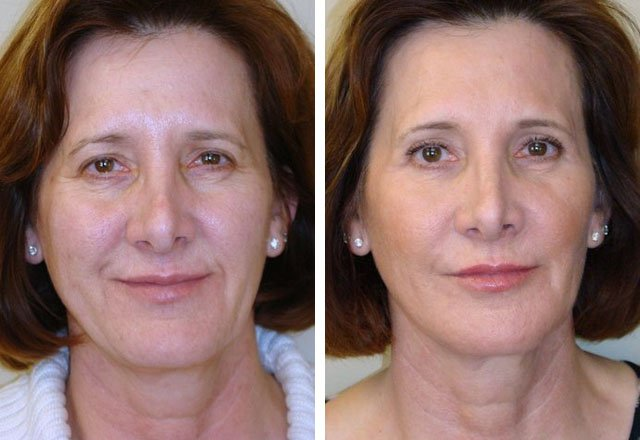
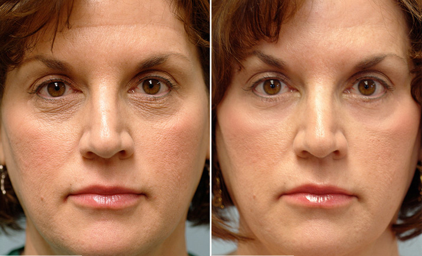
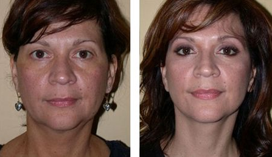

Здравейте всички! Аз съм Мая, на 40 години, майка на седем деца. Не се шегувам! Хората често ме питат: сигурна ли си, че това е истинската ти възраст? Аз често отговарям: сигурна съм, че те всичките са мои деца. И каквото и да казват злите езици, не съм си правила никакви пластични операции, повярвайте :). Тайната на младостта е много проста – бъдете щастливи, носете любов и светлина в света, обичайте себе си и семейството си!
Като говорим за грижа, аз не използвам скъпи кремове и не вярвам много на козметиците. Аз съм щастлива с единствения ми продукт за красота, който се е доказал във времето - "ProCollagen" . Заедно сме от няколко години и не бих го заменила за нищо друго. Защо? Нека ви кажа защо:)
Като повечето жени на 30, на лицето ми се появиха бръчки, кожата изгуби своята еластичност, въпреки че толкова се стараех да възвърна предишната ѝ свежест. Опитах почти всичко, което имах под ръка: кремове, маски, емулсии – от най-скъпите до такива от супермаркета. Не че усетих някаква разлика между тях. След това изтичах при козметика. След часове масажи, пилинг, инжекции наистина видях резултат. Но също така много бързо осъзнах, че ако не спра с всичко това, ще остана завинаги зависима от тези процедури! Момичета, ще ви кажа нещо – идеята на козметичната индустрия е да носи приходи на козметичните салони, а не да ви поддържа млади! Всеки, който е бил на „лекар”, знае, че обикновено лечението не се изчерпва само с едно посещение. Предписват ви 20 различни лечения, всяко от по 10 процедури, като освен това ви притискат да си купувате скъпа козметика за употреба у дома. Звучи ли ви познато? Виждате какво имам предвид, всичко това са лъжи! Има по-лесен и по-добър начин да се поддържате красиви, всичко, което трябва да направите, е да намерите перфектния крем;)
Научих за "ProCollagen" случайно. Един зимен ден се обадих на една приятелка. Точно преди това се разхождах и от студения вятър кожата ми започна да се лющи. Помолих я за овлажняващ крем. Както може би се досещате, приятелката ми ми подаде "ProCollagen" ))). Влюбих се в него почти веднага. Само след няколко минути той успокои белещата ми се кожа, изгорена от студа и вятъра. Тя изглеждаше и я усещах идеално овлажнена, мека и еластична. Бях развълнувана! :)
Не знам за вас, но аз съм свикнала да пазарувам онлайн – по-бързо е, по-лесно и най-важното винаги можете да сте сигурни за предлаганото качество, когато поръчвате от онлайн магазина на производителя. Затова бях много щастлива да открия, че "ProCollagen" може да се поръчва от вкъщи през официалния уебсайт .
И само няколко дни по-късно държах малкия пакет в ръцете си!
Харесах крема още от първото докосване. Но в този момент не знаех за основната му функция. Той не просто идеално подхранва и овлажнява. Той има и забележителен кумулативен ефект. Ден след ден "ProCollagen" прави кожата ви все по-красива, млада и еластична. Само един единствен крем носи толкова много ползи: той защитава, подхранва, овлажнява и изглажда бръчките, премахва пигментацията , уеднаквява структурата на кожата и отгоре на всичкото има лифтинг ефект! "ProCollagen" замени една дузина кутии на тоалетката ми. Един за всички !!! :)))
Разбира се, магията не се случва за една нощ – отне ми около месец да се отърва от всички признаци на остаряването. Сега съм много щастлива, когато се оглеждам в огледалото и то без никакви козметици! Благодарение на "ProCollagen" спестих пари! Предпочитам да харча пари, за да глезя любимите си хора пред това да ги давам на непознати :)
Е, красиви мои читателки! Никога не съм участвала в агитации, но все пак горещо препоръчвам да опитате поне веднъж "ProCollagen" ! Сигурна съм, че и за вас това ще бъде любов от пръв поглед. Това е истинско откритие в света на грижата за кожата, то наистина ще възвърне младостта ви и ще замести десетките скъпи процедури! А цената е наистина смешна!
Накрая, но не по важност, ето го скъпоценният линк към онлайн магазина на производителя :) Ако сте пробвали този крем, нека го обсъдим! Ще съм много щастлива да чуя за вашите резултати!:)
Здравей Мая, следя блога ти от много време. Чудех се какви продукти за грижа използваш. Благодаря ти за подробния отговор!
Много полезно Мая! Напълно съм съгласна с думите ти за козметиците. Те само ти взимат парите!
Имам нещо да добавя! Използвам "ProCollagen” от много време. Това е петата ми опаковка!!! Това е магически крем и не можах да открия нещо по-добро! Изглади дори дълбоките бръчки. И да, напълно съм съгласна, че замества десетки скъпи процедури и продукти за грижа!
И аз го използвам и го обичам! Не е по-лошо от който и да било луксозен и професионален продукт, но без съмнение не е толкова скъп!
Често чувам за този крем, но така и не намерих откъде да го купя. Благодаря за линка! И аз обичам да пазарувам онлайн:)
По-долу публикувам "преди" и "след." Разликата в лицето е огромна! ;-)
Добър продукт, купувах си го онлайн, но се изчерпа и никога повече не го намерих. Не знаех за официалния сайт :) Със сигурност ще си го поръчам!
Мая, ти си страхотна!Все още не мога да повярвам на колко години си! Изглежда този крем наистина е магически!
О, "ProCollagen" !!! Обичам го! Той наистина връща часовника. И приятелите ми си мислят, че съм си правила пластична операция. А използвам само този крем!
Не мога да намеря добър продукт за грижа. Нищо не дава резултат, точка!
Мисля, че трябва да пробвам "ProCollagen" , чух толкова много положителни мнения. Момичета, снимките ви ме карат да завиждам. И аз искам да се подмладя!
Купих си този крем преди седмица! Вече виждам ефект! Кожата ми стана красива и добре поддържана! Бръчките се изгладиха!
Здравейте всички! Аз лично не използвам този крем, но майка ми го използва и го обожава. Тя няма нищо против да покажа нейни снимки:
Красота! Ще го поръчам на следваща заплата!!!
Изобщо не е зле! Разбира се, ако ситуацията е сериозна и наистина се налага пластична операция, той няма да я замени. Но вие пак ще изглеждате поне 10 години по-млади, това е сигурно:) Може би няма да помогне на 50-60-годишните, но ще помогне на 30-40-годишните да се отърват от първите бръчки, ето от какво имате нужда! Той видимо подобрява тургора на кожата, подобрява микроциркулацията и най-важното – неговите съставки проникват в най-дълбоките слоеве на кожата. Мога да го кажа като козметичка:)
Не всички козметици са безполезни)))) Благодаря за информацията, момичета! Ще го разгледам по-подробно!
Здравей Мая! Ето и моето мнение. Този крем е супер, нямам оплаквания. Не запушва порите и не причинява алергии. Снимка по-долу.
